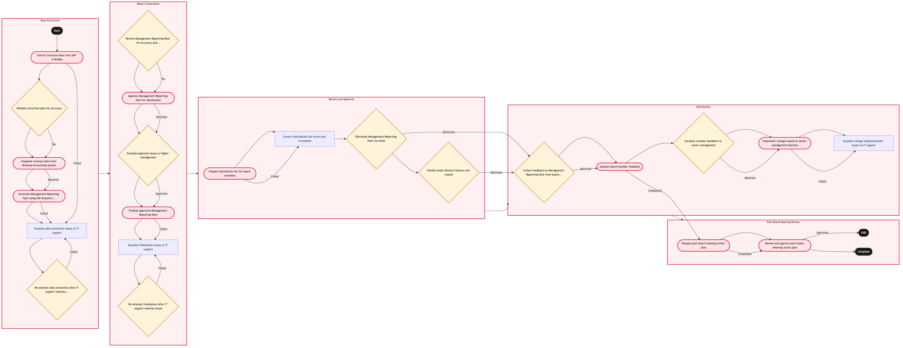

Updated 2026-08-21
Management Reporting and Board Pack
Process flow
Click to zoom

Process steps
▼
Phase 1 — Data Extraction
6 steps
| Step | Activity | Role | System | Input | Output | KPI | Dec | Exc | Pain point |
|---|---|---|---|---|---|---|---|---|---|
| 1.1 | Extract financial data from SAP S/4HANA | Financial Analyst | SAP S/4HANAA | Monthly financial close cycle initiation | Extracted financial data | Data extraction time < 2 hours | N | Y | System downtime can delay data extraction, affecting reporting timelines. |
| 1.2 | Validate extracted data for accuracy | Financial Analyst | SAP S/4HANAA | Extracted financial data | Validated financial data | Data validation completion rate > 98% | Y | N | Manual adjustments required due to system errors. |
| 1.3 | Integrate revenue data from Revenue Accounting System | Revenue Analyst | Revenue Accounting SystemC | Validated financial data | Integrated financial and revenue data | Data integration time < 4 hours | N | Y | Interline billing discrepancies can arise, leading to manual reconciliation. |
| 1.4 | Generate Management Reporting Pack using SAP Analytics Cloud | Financial Analyst | SAP Analytics CloudB | Integrated financial and revenue data | Management Reporting Pack | Report generation time < 8 hours | N | Y | Complex reporting formulas can lead to calculation errors. |
| 1.5 | Escalate data extraction issues to IT support | Financial Analyst | IT SupportU | Data extraction failure details | Resolved data extraction issue | Issue resolution time < 24 hours | N | N | Waiting for system recovery can delay the entire reporting cycle. |
| 1.6 | Re-attempt data extraction after IT support resolves issues | Financial Analyst | SAP S/4HANAA | Resolved data extraction issue | Successfully extracted financial data | Data re-extraction time < 2 hours | Y | N | Re-attempts may still fail if the root cause is unresolved. |
▼
Phase 2 — Report Generation
6 steps
| Step | Activity | Role | System | Input | Output | KPI | Dec | Exc | Pain point |
|---|---|---|---|---|---|---|---|---|---|
| 2.1 | Review Management Reporting Pack for accuracy and completeness | Financial Analyst | SAP Analytics CloudB | Management Reporting Pack | Reviewed Management Reporting Pack | Review completion time < 4 hours | Y | N | Data inconsistencies may require additional validation. |
| 2.2 | Approve Management Reporting Pack for distribution | Finance Manager | SAP Analytics CloudB | Reviewed Management Reporting Pack | Approved Management Reporting Pack | Approval time < 1 hour | N | Y | Manager's approval may be delayed due to pending audits. |
| 2.3 | Escalate approval issues to higher management | Finance Manager | SAP Analytics CloudB | Approval decline details | Higher management review | Escalation time < 8 hours | Y | N | Multiple levels of escalation can lead to delays. |
| 2.4 | Finalize approved Management Reporting Pack | Financial Analyst | SAP Analytics CloudB | Higher management review | Finalized Management Reporting Pack | Finalization time < 2 hours | N | Y | Last-minute changes may require additional adjustments. |
| 2.5 | Escalate finalization issues to IT support | Financial Analyst | IT SupportU | Finalization failure details | Resolved finalization issue | Issue resolution time < 4 hours | N | N | System limitations can cause finalization delays. |
| 2.6 | Re-attempt finalization after IT support resolves issues | Financial Analyst | SAP Analytics CloudB | Resolved finalization issue | Successfully finalized Management Reporting Pack | Finalization reattempt time < 1 hour | Y | N | Multiple reattempts may be necessary. |
▼
Phase 3 — Review and Approval
4 steps
| Step | Activity | Role | System | Input | Output | KPI | Dec | Exc | Pain point |
|---|---|---|---|---|---|---|---|---|---|
| 3.1 | Prepare distribution list for board members | Distribution Coordinator | Finalized Management Reporting Pack | Distribution list | List preparation time < 1 hour | N | Y | Incorrect email addresses can cause undelivered reports. | |
| 3.2 | Correct distribution list errors and re-prepare | Distribution Coordinator | List preparation failure details | Corrected distribution list | Correction time < 0.5 hours | N | N | Manual corrections can be time-consuming. | |
| 3.3 | Distribute Management Reporting Pack via email | Distribution Coordinator | Corrected distribution list | Email sent confirmation | Distribution time < 0.5 hours | Y | N | Email delivery failures can occur. | |
| 3.4 | Handle email delivery failures and resend | Distribution Coordinator | Delivery failure details | Resent email confirmation | Redelivery time < 0.5 hours | Y | N | Persistent failures may require manual intervention. |
▼
Phase 4 — Distribution
5 steps
| Step | Activity | Role | System | Input | Output | KPI | Dec | Exc | Pain point |
|---|---|---|---|---|---|---|---|---|---|
| 4.1 | Collect feedback on Management Reporting Pack from board members | Board Liaison Officer | Email sent confirmation | Feedback received | Feedback collection time < 2 hours | Y | N | Delayed responses can impact follow-up actions. | |
| 4.2 | Analyze board member feedback | Finance Analyst | Feedback received | Analysis report | Analysis time < 1 hour | N | Y | Complex feedback may require detailed interpretation. | |
| 4.3 | Escalate complex feedback to senior management | Finance Analyst | Complex feedback details | Senior management review | Escalation time < 2 hours | Y | N | Multiple escalations can delay resolution. | |
| 4.4 | Implement changes based on senior management decision | Financial Analyst | Senior management review | Changes implemented | Change implementation time < 1 hour | N | Y | Implementation delays can affect next reporting cycle. | |
| 4.5 | Escalate change implementation issues to IT support | Financial Analyst | IT SupportU | Change implementation failure details | Resolved change issue | Issue resolution time < 2 hours | N | N | Persistent implementation failures may require system adjustments. |
▼
Phase 5 — Post-Board Meeting Review
2 steps
| Step | Activity | Role | System | Input | Output | KPI | Dec | Exc | Pain point |
|---|---|---|---|---|---|---|---|---|---|
| 5.1 | Prepare post-board meeting action plan | Finance Manager | Analysis report | Action plan | Action plan preparation time < 1 hour | N | Y | Incomplete action plans can delay follow-up tasks. | |
| 5.2 | Review and approve post-board meeting action plan | Finance Director | Action plan | Approved action plan | Approval time < 0.5 hours | N | Y | Director's approval may be delayed due to other priorities. |
Swim lanes
Financial Analyst1.1 1.2 1.4 1.5 1.6 2.1 2.4 2.5 2.6 4.4 4.5
Revenue Analyst1.3
Finance Manager2.2 2.3 5.1
Distribution Coordinator3.1 3.2 3.3 3.4
Board Liaison Officer4.1
Finance Analyst4.2 4.3
Finance Director5.2
Systems touched
SAP S/4HANAARevenue Accounting SystemCSAP Analytics CloudBIT SupportUU
Key performance indicators
- Data extraction time < 2 hours
- Data validation completion rate > 98%
- Data integration time < 4 hours
- Report generation time < 8 hours
- Finalization reattempt time < 1 hour
Risks and control points
- System downtime affecting data extraction
- Manual adjustments due to system errors
- Interline billing discrepancies requiring reconciliation
- Complex reporting formulas leading to calculation errors
- Delayed feedback from board members
Air Canada Process Wiki — process and systems reference compiled from public sources
for IT Application Management and User Support pre-sales discovery.
Built 2026-08-21. Every system carries an evidence tier: tier C is an industry pattern and tier U is an open
question, and neither should be asserted as fact about Air Canada without confirmation in discovery.
Not affiliated with or endorsed by Air Canada. Air Canada, Aeroplan and Altitude are trademarks of Air Canada.